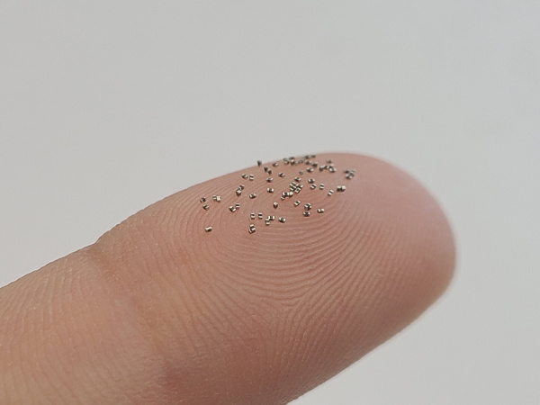

Samsung Electronics has produced an ultra small MLCC capacitor with a length of only 0.4mm and a withstand voltage of 6.3V

Samsung Electronics announced on April 14 that it has successfully produced a new 0402 MLCC multilayer ceramic capacitor. The product is only 0.4mm in length, 0.2mm in width and height, which is similar to the width of human fingerprint.Samsung Electronics has produced an ultra small MLCC capacitor with a length of only 0.4mm and a withstand voltage of 6.3V
It home learned that MLCC capacitors are widely used in small electronic devices such as smart phones, with the advantages of small size and stable performance. Samsung's capacitor not only achieves a capacity of up to 1 μ F, but also improves the withstand voltage to 6.3V, which is more widely used than the previous 4V withstand voltage, helping to further reduce the volume of electronic products and wearable devices.
In addition, Samsung also said that this 0402 MLCC capacitor has good DC bias characteristics, avoiding the problem that the capacitance of MLCC will drop when loading DC voltage. Officials say the new product will help with applications such as 5g devices and mobile phones with multiple cameras.